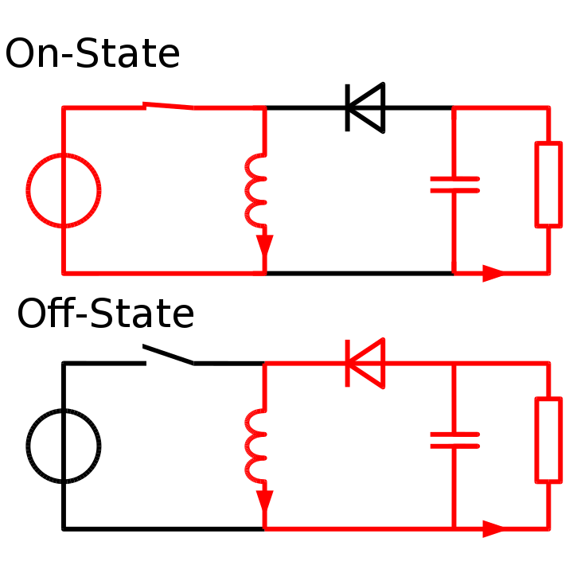

Bagaimana prinsip kerja buck boost converter? Buck boost converter merupakan jenis DC-DC converter dengan fungsi ganda, yaitu kemampuannya dalam menurunkan dan menaikkan tegangan output. Namun karena fungsi ganda yang dimilikinya efektivitas buck boost dalam mengubah tegangan tidak sebaik dengan DC-DC converter yang hanya memiliki 1 fungsi.
Penurunan dan kenaikan tegangan pada buck boost sangat tergantung terhadap proses switching-nya serta penempatan dari inductor pada rangkaian. Sehingga yang akan dibahas kali ini adalah bagaimana prinsip kerja dari buck boost converter ini? Bagaimana peran induktor dalam menjalankan fungsi ganda converter? Serta bagaimana switching memengaruhi kenaikan dan penurunan tegangan output?
Gambar di atas merupakan alur proses bagaimana buck boost converter bekerja, suatu DC-DC converter memiliki 2 kondisi kerja yakni kondisi ON dan kondisi OFF, yang dimaksud kondisi ON adalah ketika sumber tegangan hanya terhubung ke induktor dan kondisi OFF adalah ketika sumber tegangan tidak terhubung ke rangkaian sama sekali.
Kondisi ON buck boost converter
Pada kondisi ON power supply hanya akan memberikan suplai ke inductor saja. Hal ini dikarenakan laju arus menuju ke sisi beban akan diblok oleh diode. Hampir menyerupai dengan apa yang terjadi pada boost converter, arus yang mengalir pada kondisi ON akan sangat besar karena short circuit meskipun hanya sesaat. Hasil dari arus yang besar ini juga akan membuat energi yang disimpan pada induktor juga sama besarnya, sebelum nantinya dilepaskan ke beban.
Nantinya juga pada kondisi ON kapasitor akan melakukan proses discharging pada rangkaian buck boost converter ini. Dimana hasil proses discharging akan diteruskan menuju ke beban saja karena beda potensial pada sisi induktor lebih tinggi karena adanya short circuit sesaat.
Kondisi OFF buck boost converter
Pada kondisi OFF induktor yang telah menyimpan energi dalam bentuk arus dalam jumlah yang besar tadi akan bertindak sebagai power supply, yang akan memberikan suplainya ke kapasitor dan beban. Karena pelepasan energi pada induktor selalu berkebalikan dengan arah datangnya.Oleh karena itu, pemasangan komponen kapasitor dan beban akan berada pada sisi NEGATIF POWER SUPPLY.
Selain memberikan suplainya ke beban, pada proses kali ini juga proses charging pada kapasitor akan terjadi, besar kecilnya proses charging ini sangat bergantung dengan seberapa besar pelepasan energi yang dilakukan oleh induktor, dan pelepasan energi oleh induktor ini bergantung dengan seberapa lama proses switching pada kondisi ON yang dilakukan rangkaian.
Peran inductor
Peran induktor pada rangkaian buck boost converter ini berfungsi sebagai power supply baru ketika sistem dalam kondisi OFF. Karena pada buck boost converter induktor bekerja pada satu siklus penyimpanan energi dan satu siklus pelepasan energi.
Peran induktor pada rangkaian buck boost converter ini berfungsi sebagai power supply baru ketika sistem dalam kondisi OFF. Karena pada buck boost converter induktor bekerja pada satu siklus penyimpanan energi dan satu siklus pelepasan energi.
Sehingga membuat sifat penyimpanan dan pelepasan energi oleh induktor pada rangkaian buck boost converter bersifat maksimum. Berbeda dengan apa yang terjadi pada boost converter yang sifat penyimpanan energinya bersifat maksimum, sedangkan pelepasan energinya bersifat minimum
Peran switching
Seperti yang sudah disinggung di awal bahwa switching memiliki peranan penting dalam menaikkan atau menurunkan tegangan output.
Pada buck boost converter switching dengan interval (duty cycle) diatas 50% membuat rangkaian menaikkan tegangan pada sisi output. Untuk interval switching dibawah 50% membuat rangkaian menurunkan tegangannya. Dan apabila switching tepat pada interval 50% maka nilai tegangan output rangkaian buck boost converter akan bernilai sama dengan sisi power supply.
Interval switching inilah yang menentukan besar atau kecilnya kapasitas penyimpanan energi yang dilakukan oleh induktor. Semakin besar interval switching maka semakin besar pula energi yang disimpan oleh induktor, yang mana nantinya akan dilepaskan ke sisi beban, begitupun sebaliknya.